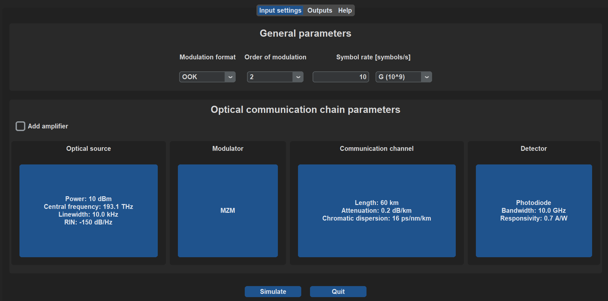
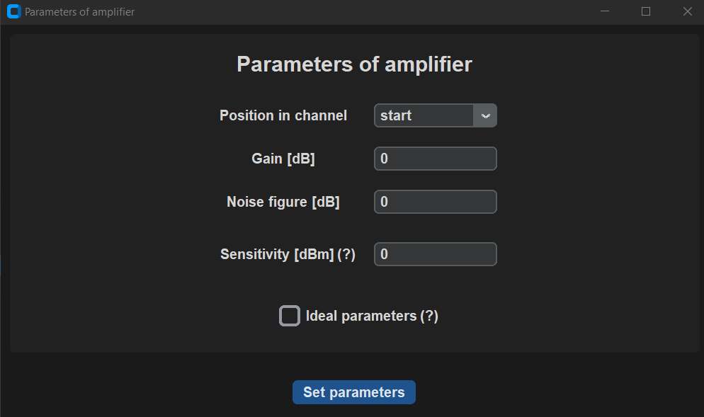
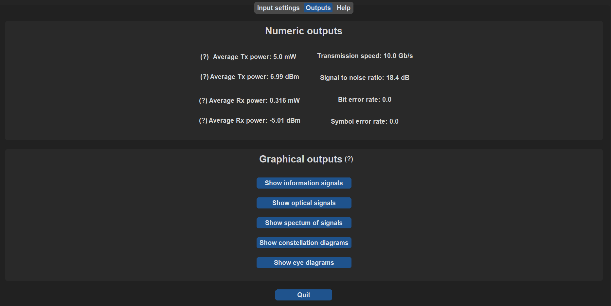
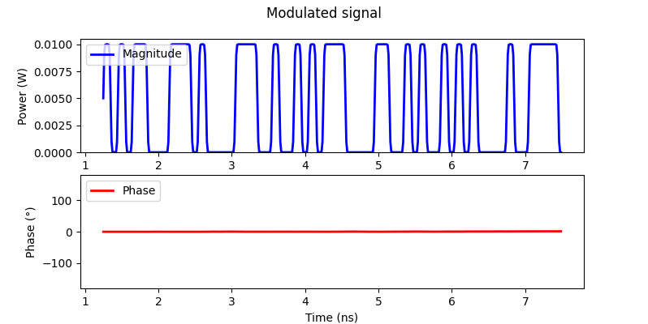
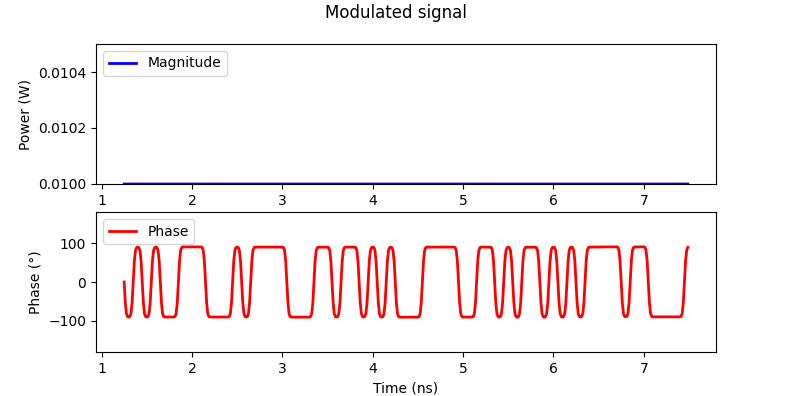
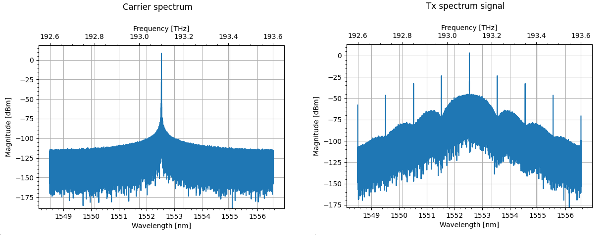

Screenshots
GUI screenshots
Main window with settings

Window to set parameters of amplifier

Outputs tab

Help tab

Outputs screenshots
OOK modulated signal

PSK modulated signal

QPSK constallations diagrams

Carrier and OOK spectrum

PAM4 eye diagrams